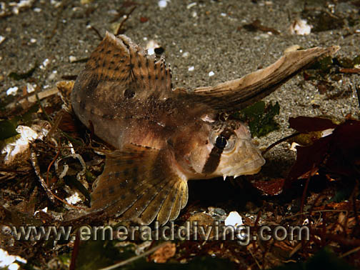
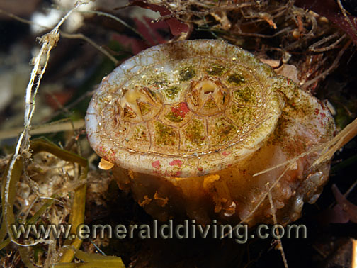
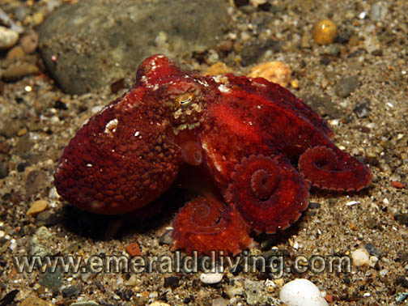
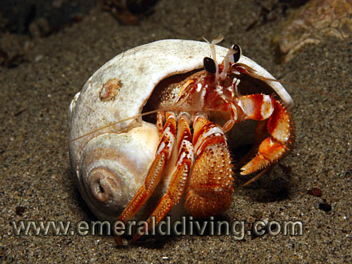
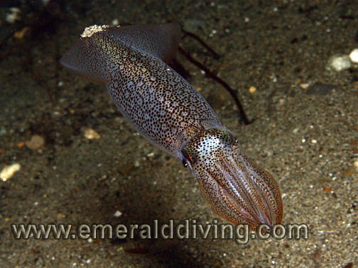
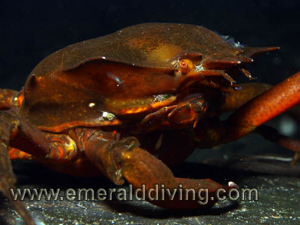

©2010 Emerald Diving, All Rights Reserved
Dive Reports
Emerald Diving
Explore the coastal and inland waters of
Washington and BC
Explore the coastal and inland waters of
Washington and BC
Emerald Diving
Explore the coastal and inland waters of
Washington and BC
Explore the coastal and inland waters of
Washington and BC
Emerald Diving
Explore the coastal and inland waters of
Washington and BC
Explore the coastal and inland waters of
Washington and BC


Open Your Eyes to Three Tree Point
Three Tree Point: 11.27.10

One of the coolest little fish you will ever find, the Pacific spiny lumpucker swims like a little helicopter. This nickel size specimen has afixed itself to a rock using its modified pelvic fin which serves as a sucker.

Northern kelp crab

Juvenile northern kelp crab is no bigger than a dime with its legs extended.
The cards are just stacked against even getting in the water on some days. For me, that day was last Saturday. It had been two months since my last underwater adventure - way too long. So I called my dive buddy Jon, got the boat out of the garage, and headed out in the morning for the Redondo ramp for two highly anticipated dives - one at KVI Tower, and the other at Sunrise Beach. We were greeted at the boat ramp by a hefty 30 foot log perfectly paced by the last storm so it completely blocked the boat ramp. One end of the log was beached and wedged tight under the dock while the other end floated free in about 12 feet of water. The only way we were going to get that log off the ramp was with a team of hungry termites - or drag it off the ramp with a boat (hard to do when you boat is on the trailer). So it was on to "Plan B". We decided to head up to Don Armini ramp in Seattle and do two dives at KVI Tower. Upon returning to the boat and truck, Jon and I both noted the smell of hot metal. I went around the boat trailer and felt each of the four wheels hoping to find them all as cool as Puget Sound on this November day. Sadly, I noted one wheel was real hot. So hot that when I spat on the hub, the spit instantly boiled off. Not a good sign.

I wasn’t sure if the problem was with the brakes or bearings, so I pulled the wheel off the trailer. The drum would rotate backwards, but not forward, so it appreared to like a brake shoe issue. Unfortunately, EZ loader brake drums are integrated with the hub and cannot be removed separately to inspect the brake shoes. Rather than continue to heat up the trailer hardware, I carefully three-wheeled it home - which may be the only benefit of having an overbuilt double axel trailer.
I felt disappointed and cheated driving home. I was all set to dive that day! It hadn’t got the diving bug in a while, so I decided that EZ Loader was not allowed to ruin a dive day. With the boat out of commission, why not hit a shore dive? Three Tree Point at night would be perfect as it had been three months since I had last been there and November is Pacific spiny lumpsucker season.
I entered the water just as darkness set in. As I descended in 15 feet of water, I noted how clear the water looked as my HID light turned blackness into daylight. This is going to be an outstanding dive! But my enthusiasm was cut short as I passed 12 feet when I felt what seemed to be a large nail pierce my right temple - sinus block!! By 14 feet, the pain was excruciating. I stopped the descent and quickly ascended to 10 feet, where the pain subsided. I cleared my ears several times, then descended again. I got to 15 feet this time before the knife-like pain returned to my sinus. Maybe I really SHOULDN’T be diving today. Was this strike three (log, boat trailer, sinus)? Not if I could help it. I headed to shore and met the substrate at 12 feet where the pain subsided, then followed the substrate to the northwest and was careful to stay around 12 feet. Anytime I ventured more than a couple feet deeper, the pain switch was immediately activated. I was able to slowly work my way down to the incredible depth of 22 feet (good thing I was breathing 32% Nitrox!) after about 10 minutes of sinus acclimation, but dared go no deeper. I spent the entire 75 minute dive exploring the shallows, just below the line where the kelp starts. Almost all of the broadleaf kelp is gone by this time of year, but the remnants that are left serve as sanctuary for a number of wonderful critters.
During my dive I encountered six of the elusive Pacific spiny lumpsuckers - all about the size of a nickel. Add in a playful red octopus, sailfin sculpin, a dozen incredible white lined dironas, and repeated aerial assaults from small curious opalescent squids, and I had quite a dive. The 75 minutes flew by, and left me wanting for more.
After doing over 275 dives at this site over the last 10 years, this subtle yet remarkable site never ceases to get old. If you have an eye for the little things, Three Tree Point is a gold mine - even at 22 feet. Perseverance and a stuffed sinus indeed do pay off.
Disk top tunicate
Sailfin sculpin




Red octopus
Blackeye hermit


Opalescent squid
Pacific spiny lumpsucker
Blacktail shrimp.
Blackeye hermit.